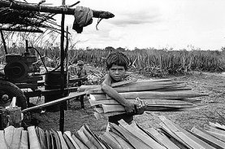
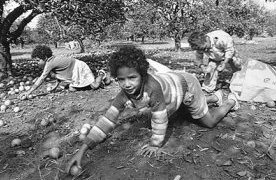
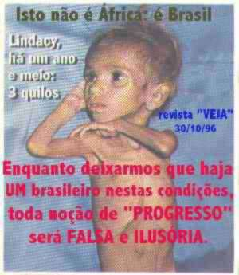

tkx to Josie and
lolol f0r the teXt...and bruce f0r th3
image...valeuz...heheh
DECLARAÇÃO DOS DIREITOS DA CRIANÇA (1ª Parte)
PRINCÍPIO 1º
A criança gozará todos os direitos enunciados nesta
Declaração.
Todas as crianças, absolutamente sem qualquer exceção,
serão credoras destes direitos, sem
distinção ou discriminação por motivo de raça, cor,
sexo, língua, religião, opinião política ou de outra
natureza, origem nacional ou social, riqueza, nascimento ou
qualquer outra condição, quer sua ou de
sua família.
PRINCÍPIO 2º
A criança gozará proteção especial e ser-lhe-ão
proporcionadas oportunidades e facilidades, por lei e por
outros meios, a fim de lhe facultar o desenvolvimento
físico, mental, moral, espiritual e social, de forma
sadia e normal e em condições de liberdade e dignidade.
Na instituição de leis visando este objetivo levar-se-ão
em conta sobretudo, os melhores interesses da
criança.
PRINCÍPIO 3º
Desde o nascimento, toda criança terá direito a um nome e a uma nacionalidade.
PRINCÍPIO 4º
A criança gozará os benefícios da previdência
social.
Terá direito a crescer e criar-se com saúde; para isto,
tanto à criança como à mãe, serão
proporcionados cuidados e proteção especiais, inclusive
adequados cuidados pré e pós-natais.
A criança terá direito a alimentação, habitação,
recreação e assistência médica adequadas.
PRINCÍPIO 5º
À criança incapacitada física, mental ou socialmente
serão proporcionados o tratamento, a educação e
os cuidados especiais exigidos pela sua condição
peculiar.
Fonte: ONU. Comitê Social Humanitário e Cultural da
Assembléia Geral
-----------------------------------------------------------------------------------------------------------------------------------------------------------
Crianças fazem sapatos e tijolos
LUCIANA FINAZZI
da Folha Ribeirão
Na região de Ribeirão Preto, no interior de São
Paulo, crianças com menos de 14 anos ainda deixam de brincar porque têm de trabalhar.
Em Franca (a 401 quilômetros de São Paulo), as crianças
costuram junto com os pais os sapatos que são feitos pelas fábricas da cidade.
Em Rincão (a 305 quilômetros de São Paulo), os filhos
ajudam os pais nas olarias (fábricas de tijolos).
Eles limpam os fornos em que se faz o tijolo, carregam
carrinhos pesados e ajudam a descarregar caminhões.
Em Franca, Tamy Cristina Procópio, 10, estuda na 4ª
série à tarde e trabalha costurando sapatos de manhã e à noite. Disse que gostaria de
fazer natação de manhã. "Eu queria competir nas Olimpíadas." Tamy disse
também que trabalha para ajudar a mãe, Vera Lúcia Bárbara.
Tamy, a mãe e uma irmã de 15 anos trabalham costurando
sapato durante o mês inteiro e ganham, juntas, RÏ 150,00. O dinheiro tem de dar para o
sustento de toda a família, que inclui uma irmã de 3 anos. "Preciso da ajuda de
Tamy para manter a família", disse a mãe.


Estamos iniciando uma campanha para um Brasil
melhor, por favor nos apoie e faça esta campanha se epalhar pela Net porque todos nós
queremos mudar o Brasil para um país MELHOR para nós vivermos!
Greetz: inferno.br (aeaeae...de volta!),
crime boys, ohb, securenet, tdk,mr delete
People: Lygia, Mariana M., gabi, colli, bussunda, amanda etc...(ricardo cesar e
daniel dos santos tbm!)